Refactoring an Old ECS
When I started working on Varkor 4 years ago, the first thing I built was the ECS (Entity Component System). Considering that I've used it ever since, it was wise to build this system first, but for years it has had deficiencies that I have avoided fixing. After a long break from Varkor due to the ebb and flow of life, I'm working on it again. A good way to get back into it involved addressing glaring problems with my ECS implementation. In this post I'll talk about the state of my ECS before refactoring it, my problems with that original implementation, the steps taken to evolve it, and performance comparisons showing just how necessary a refactor was. Along the way, I will dive deep into the nitty-gritty. Doing so makes it easier to explain my thoughts, and it's much more valuable for a reader as a means of learning from my mistakes. Without further ado, let's kick it.
Terminology
It is necessary to cover the general meaning of the implemented constructs such that we're on the same page. These definitions are purposefully abstract. The remainder of the post will not be. First, Space: a collection of entities and all components that entities within the space own. Second, Entity: a construct managed by a space that owns components. It can be thought of as a game object. Third, Component: a construct that stores the user data underlying the entire ECS. No data is stored on an entity. Entities are simply a collection of components. System is also an important part of ECSs, but that will not be entertained in this post.
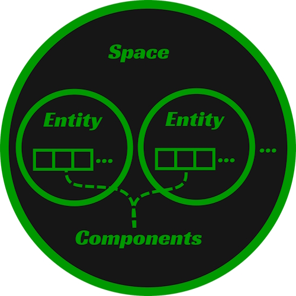
The Original Implementation
This section is a dense description of how things worked. A link to the commit containing the old implementation can in the Performance Comparisons section; It's revision old_0. I will be looking at it as I write my description of it. Relevant files can be found in the src directory: world/Space.*, world/Table.*, test/world/Space.cc, test/world/Table.cc.
Originally a space contained the following members.
struct Space {
//...
Ds::Map<Comp::TypeId, Table> mTables;
Ds::Vector<Member> mMembers;
Ds::Vector<MemberId> mUnusedMemberIds;
Ds::Vector<ComponentDescriptor> mDescriptorBin;
//...
};
Before I jump into any of these members, it is necessary to mention that a MemberId is just an EntityId. Entities are referred to as members. I chose this identifier because entities are "members" of a space. I regret not using standard terminology for the sake of clarity. Just remember, the words member and entity can be used interchangeably. Sorry.
Now that the elephant has been acknowledged, let's first discuss mTables. This is where the "meat" of a space is stored. A single table, or more specifically, component table, contains all instances of a specific component type within a space. Suppose, for example, a space has entities that only own component types A, B, and C. That space would have a total of 3 tables: an A table, B table, and C table. The table will be a central point of discussion, so let's look at the members of Table to understand its purpose and implementation before talking about other members of the space.
struct Table {
//...
Comp::TypeId mTypeId;
char* mData;
size_t mSize;
size_t mCapacity;
Ds::Vector<MemberId> mOwners;
//...
}
First, mTypeId, the ID of the component type that a table stores. It is used to access a component type's TypeData. The TypeData contains a wealth of information about the component type. It's important to note that TypeId and TypeData correlate to specific c++ types. How that works is another discussion. Crucially, the TypeData contains a component's size, i.e., the number of bytes its corresponding c++ type requires. The component's size is necessary for calculating the size of a component table's allocation, the pointer to which is stored in mData.
If you've implemented a vector before, other members will likely look familiar. Assuming that there exists similarities between a table and a vector is an apt thought. Just like a vector, mSize is the number of elements, or in this case, components, that a table is currently storing. mCapacity is the number of components it can store before the table's allocation needs to grow.
The last member to explain is mOwners. The elements of this vector map directly to the components contained within the table's mData allocation. If a component exists at index i, the member ID that owns it can be found at mOwners[i].
Here is a picture demonstrating how to think about this structure. Within the component array, a + represents an in use component element and a - represents an element not in use.
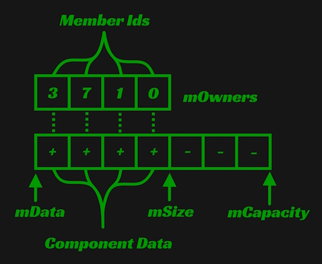
Now let's zoom back out to the Space again to talk about the responsibility of mMembers. This description will bleed into the purpose of mDescriptorBin because the two are intimately related. An element within mMembers contains information about the components an entity owns. A MemberId is just an index into the mMembers vector. This begs the question, what is a Member composed of?
struct Member
{
//...
DescriptorId mFirstDescriptorId;
DescriptorId mDescriptorCount;
//...
std::string mName;
MemberId mParent;
Ds::Vector<MemberId> mChildren;
//...
};
We're going to focus entirely on the DescriptorIds. The purpose of the other members is more obvious and I will discuss them briefly while covering issues with this implementation. mFirstDescriptorId is an index for the first ComponentDescriptor in mDescriptorBin that a member owns. mDescriptorCount is the number of descriptors a member owns starting from mFirstDescriptor. Most importantly, a member is just a collection of descriptors. What's a ComponentDescriptor then?
struct ComponentDescriptor
{
//...
Comp::TypeId mTypeId;
size_t mTableIndex;
};
This describes where the data of a component can be found and that brings us back to Table. mTypeId is the table that the component is stored in and mTableIndex is the index within that table at which the component can be found. To say this system is a bit complicated is an understatement, therefore I find showing a picture of the relationship between mMembers, mDescriptorBin, and mTables not just be helpful, but necessary.
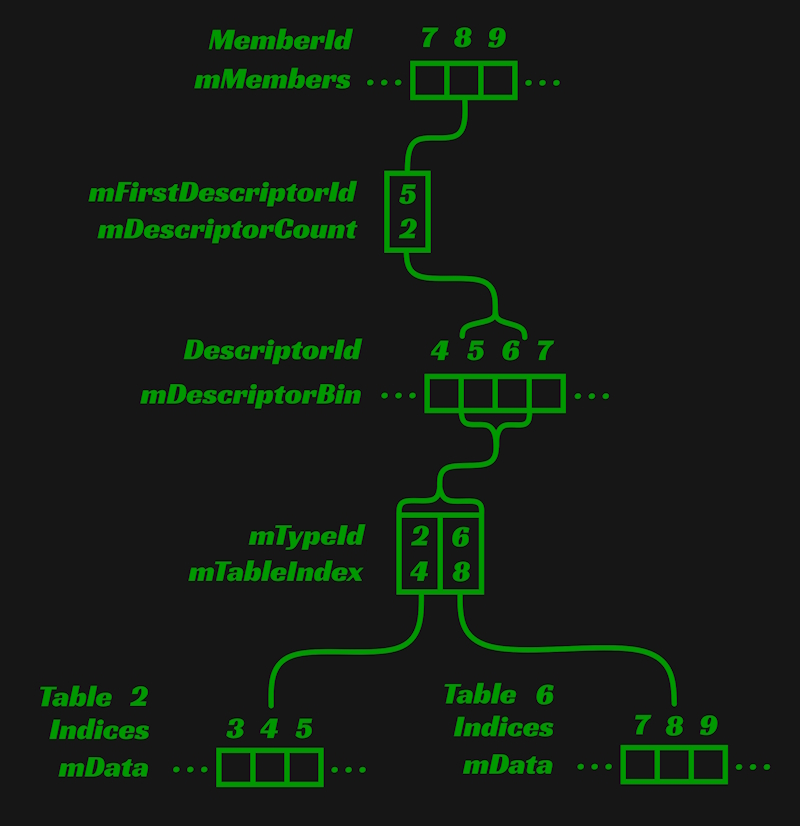
Issues With the Original Implementation
Besides being overly complicated, most problems with the original system had something to do with wasting memory. This carelessness came in two forms. We'll talk about the easy to explain problem first.
The fields of the Member struct, mChildren, mParent, and mName were a poor use of memory. Not every member needs a name. It is expected that a user will often programmatically create members. These members will be referenced by IDs stored in client side variables, not names. Likewise, not every member needs a parent or children. Whether members have relationships is highly use case dependent, but the use cases that don't require relationships do not need memory dedicated to parents and children. Having the Member struct reserve memory for names and relationships is therefore an unwise use of memory. Rather than being forcefully shoved in, these fields should be opt-in, such that a user can choose to employ them if there is a need to do so. Luckily, the solution to this problem is easy; Put the data into components. I opted to make a Name and Relationship component type, but I regularly see people splitting the relationship component into Parent and Children components.
The second instance of squandering memory is not readily apparent, but it's my primary reason for refactoring this system. Nothing about the description makes the problem clear, therefore examples are necessary to make it so.
Say a component is removed from a member. That means that a component descriptor is removed from that members span within the descriptor bin. Now there is a gap within the component descriptor bin. As more components are removed from that member and others, gaps of various sizes form within the descriptor bin. The picture below is an example of such a situation. Component type 2 is removed from the member's span of component descriptors and a gap is left. X represents an in use component descriptor and ! represents a component descriptor not in use.
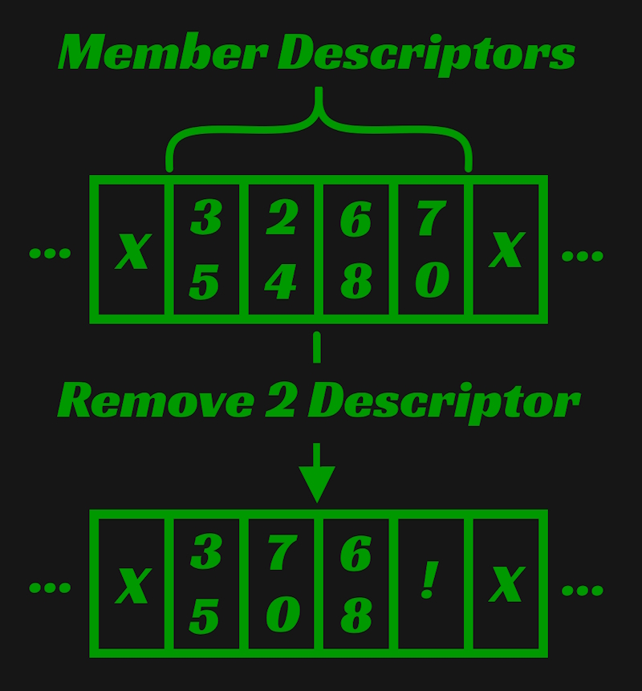
Now say a component is added to a member. If the next component descriptor after that member's span of descriptors is not being used by another member, the member receiving the new component takes ownership of it. However, if that next descriptor isn't available, all the member's descriptors are moved to the end of the descriptor bin, forming another unused gap where those descriptors used to be.
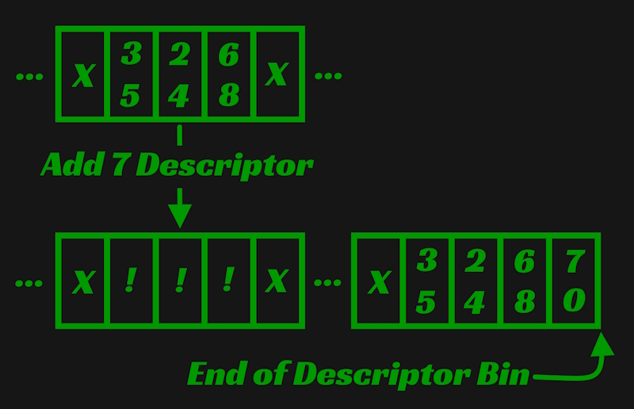
The gaps created in both of these cases are, except for one condition, never used again. When a new member is created and components are added to it, the component descriptors are appended to the end of the descriptor bin. The implementation does not attempt to use these gaps or perform garbage collection to remove them. A gap can only be occupied if an existing member acquires new components and the descriptors after that member's span within the descriptor bin are unused.
The component table has a very similar problem. When a component is removed, a gap forms inside the component table at the element that the old component occupied. This is worse than the descriptor bin, because this gap is guaranteed to never be used again. Though this problem was easier to mend, no fix was done because of a refactor's appeal.
All of these examples are demonstrations of the same problem. A gap forms within an array and that gap is never used again. The result: a perpetually increasing memory overhead due to the removal and addition of elements within various arrays. An ECS should not behave like this. Only adding data to the system should create this memory overhead. When data is removed, the memory it occupied must be recycled. Why should an ECS be so? Consider a bullet hell game where a user is creating and destroying 10s to 100s of entities every second. Not recycling memory in such a case is a massive waste of resources.
There are other details that indicate a poor implementation. A table doesn't prevent a single member from owning two components within it. In my 10 years of dealing with ECSs, I have never encountered a case where an entity needs two instances of the same component type. In the original implementation, this is prevented by searching through a member's current descriptors for an already existing instance of the component type. Not having tables explicitly prevent this situation however, is a smell. Another detail was the need for an unused member ID vector to prevent gaps from forming within the member bin. Why this is unnecessary only became clear during the refactor which I'll talk about soon.
Research
It is non-negotiable that these problems must be addressed. A perpetually growing memory overhead due to not making nearly any effort to reuse memory is just a means to an end. This problem was known since writing the original implementation and some ideas about how to address the issue floated around in my mind for a long time. Initially, I believed some form of garbage collection and/or better functions for adding members and components would need to be implemented. Maybe a function responsible for packing all in-use memory tightly together could run once every few frames. Maybe the functions for adding members and components could attempt to fill gaps before using untouched memory. Rather than rushing to implement said ideas, I decided to take a step back, do my due diligence, and research exactly how existing libraries solve the problem I have.
One such library is Flecs. Flecs uses a pattern referred to as archetypes to implement an ECS. Unlike my original implementation where every component type receives a single array, archetypes are represented with tables that exist for each unique set of components attached to entities. For example: Say entities 1 and 2 both have components A and B, and entity 3 has components A and C. This would leave us with two archetypes that are accounted for with two corresponding tables. One stores the components of entities 1 and 2. The other table stores the components of 3. If you'd like to learn more, I highly recommend reading this post by the creator of Flecs.
At first, I enjoyed the idea of archetypes. From the view of one that's not experienced with the pattern, it appears to keep data organized in a relatively nice fashion. Unfortunately, realizing that adding or removing a component from an entity requires copying all the components attached to that entity to a new table didn't sit very well with me, hence I didn't further explore the archetype path. I was already aware that techniques making intelligent use of memory while adhering to the core principle of my original implementation (every unique component type receives a single array) exist and my desire was to understand and implement a technique that stuck to this principle while also addressing my unacceptable memory issues.
This is where EnTT takes the spotlight. I've been aware of this library for a long time and used it while I worked at Chasing Carrots. Knowing that it utilized the component array technique is what led me to my first table implementation. However, unlike my implementation, EnTT uses sparse sets to keep these component arrays tightly packed any time components are added or removed. Before refactoring my system to address my memory problem, it was first necessary to understand sparse sets, and importantly, how they can be used to solve my problem. These two articles and stepping through EnTT's source were a crucial part of that process.
ECS Back and Forth part 1
ECS Back and Forth part 2
Sparse Sets
There are plenty of resources explaining this data structure. Here is one very minimal explanation. Here is what I believe to be the first paper discussing the technique. Despite this existing material, I'd like to present my own explanation and implementation. I opted to do something different from other implementations in order to provide an extra feature. The inclusion of this certainly has a performance cost, but this isn't a concern of mine since that's not an active bottleneck.
The high level idea is thus, there exists a sparse array whose elements point to indices within a dense array. An element within the dense array points back to the element in the sparse array that points to it. The relationship is bidirectional. The goal is that in-use elements in the dense array stay tightly packed while elements in the sparse array can be spread out. The following image is an example state of this set. The top array is the dense and the bottom array is the sparse. An empty box indicates uninitialized or irrelevant memory.
Existing implementations provide three means of modifying the set: Add, Remove, and Clear. Each of these operations are constant time. In my implementation, I renamed Add to Request and Add became my extra feature. I'll cover the well-known Request and Remove operations the way they are traditionally implemented. Then I will present my Add function and the changes made in order to write it.
Request adds a specific value to the sparse set or rather, it requests that a value be part of the set. It now becomes necessary to define denseUsage. denseUsage is the quantity of elements within the set. In association with a sparse set, this is also the number of elements currently in use from the start of the dense array. To add a value to the set, we do the following.
void SparseSet::Request(SparseId id) {
//..
mSparse[id] = mDenseUsage
mDense[mDenseUsage] = id;
++mDenseUsage;
}
I have excluded some code from the snippets in order to focus purely on the data structure's properties. This includes code checking for valid arguments and dynamic resizing. I will touch upon the process for verifying the validity of provided arguments shortly.
Continuing from the first example image of a sparse set, this is what the new sparse set would look like if Request(4) were called. The extra arrow here represents the current number of dense elements, aka the value of denseUsage.
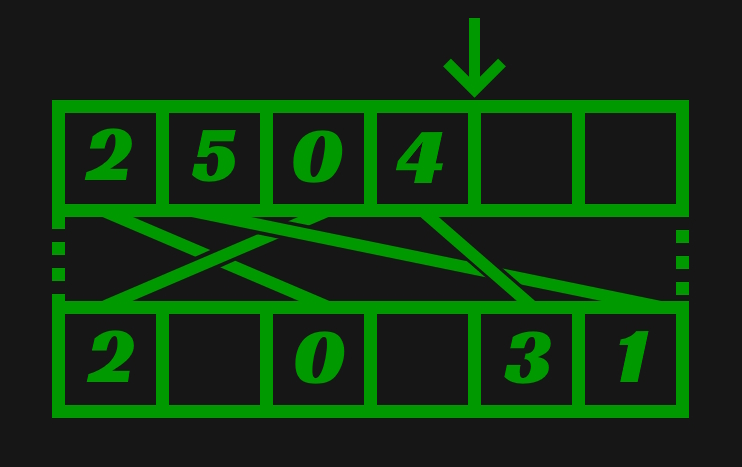
Remove removes a value from the set. The sparse set allows this to be done in constant time by replacing the dense element requested for removal with the last element in use in the dense array. After that, the sparse element that was pointing to the last element of the dense array is updated to point to its new location.
void SparseSet::Remove(SparseId id) {
//...
size_t idx = mSparse[id];
SparseId replaceId = mDense[mDenseUsage - 1];
mDense[idx] = replaceId;
mSparse[replaceId] = idx;
--mDenseUsage;
}
Continuing from the previous example picture. If Remove(5) were called, the dense element containing 5 is overwritten with 4, and the 4th sparse element is updated to point to the new index.
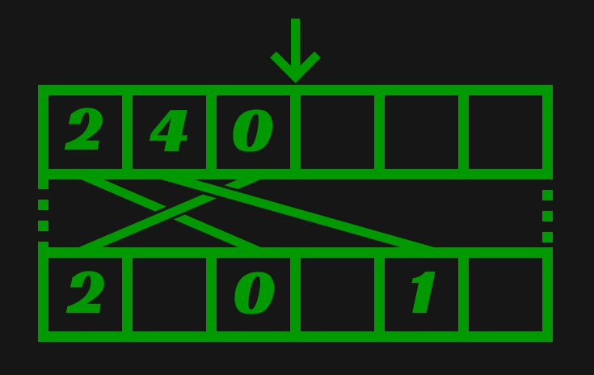
Clear continues the trend of simplicity with the simplest implementation of the three functions. Simply set the dense usage back to 0.
void SparseSet::Clear() {
mDenseUsage = 0
}
As I said earlier, there is also a means of checking the validity for the arguments provided to the Request and Remove functions. This is just matter of determining whether an ID is a part of set or not. If an ID is being requested, it can't already be part of the set; if an ID is being removed, it must be part of the set. Here's how that can be checked.
void SparseSet::Valid(SparseId id)
{
return mSparse[id] < mDenseUsage && mDense[mSparse[id]] == id;
}
This is where my implementation differs. Rather than leaving the sparse and dense arrays uninitialized, my implementation opts to initialize the entirety of both arrays upon creation while upholding the constraint that every sparse element be tied to a single dense element and vice versa. This allows the structure to add some random value to the set in constant time. Such a capability is useful in situations where the value added to the set does not truly matter; It simply needs to be unique. Having the function provides a system requiring unique identifiers for some construct a robust way to acquire these identifiers. The image below presents how I initialize the arrays. In order to reduce complexity in the example images, from this point on I will no longer draw lines indicating how elements of the arrays are bound to one another. I will instead use white to highlight the elements that are in use.
Because of the added constraint, the implementations of Request and Remove differ from the traditional. Rather than ignoring the elements of the sparse and dense arrays that are not in use, they must also be updated, thereby upholding the constraint. Maintaining this constraint requires changing the single sets done in the previous implementations to element swaps. In both functions, two swaps are performed.
For Request, a swap in the sparse array is performed first: the requested sparse element is swapped with the sparse element tied to the dense array's next available element. This results in the requested sparse element pointing to the next available dense element. After this, a swap is performed in the dense array to reflect the swap performed in the sparse array. The dense array's next available element is swapped with the dense element that was tied to the requested sparse element before the sparse array element swap. A temporary is used to store the index of the dense element to keep things easy to read, but it is not necessary since this value still exists in the sparse array.
void SparseSet::Request(SparseId id)
{
//...
size_t temp = mSparse[id];
Util::Swap(mSparse, (size_t)id, (size_t)mDense[mDenseUsage]);
Util::Swap(mDense, mDenseUsage, temp);
++mDenseUsage;
}
The following image shows an example of this. In it, Request(1) is called. First the swap in the sparse array is performed, resulting in the swap of elements at indices 1 and 3. Then the swap in the dense array is performed, resulting in the swap of elements 3 and 5.
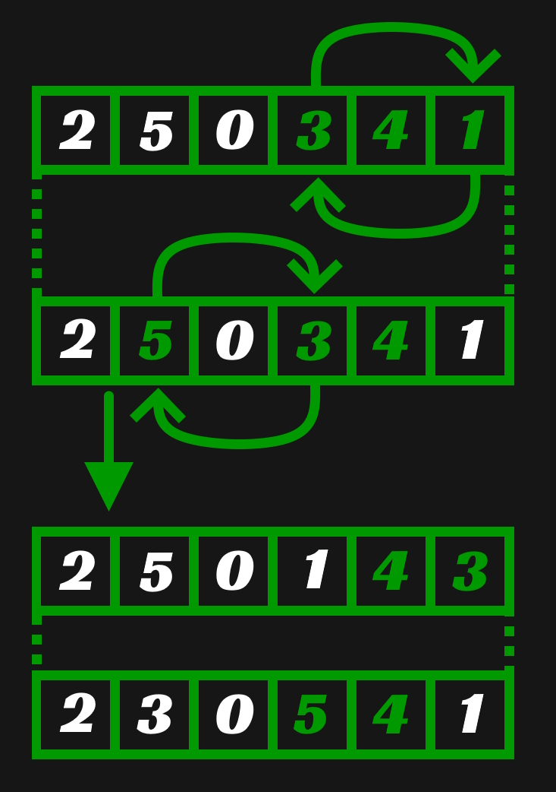
Remove performs a similar set of swaps. Like request, a swap is first performed in the sparse array. The element requested for removal is swapped with the element tied to the last in use element of the dense array. Afterwards the last in use element of the dense array is swapped with the dense element tied to the sparse element requested for removal. An unnecessary temporary is used here as well to make the code more readable. I found it particular challenging to wrap my head around these swaps when not using one.
void SparseSet::Remove(SparseId id)
{
//...
size_t temp = mSparse[id];
Util::Swap(mSparse, (size_t)id, (size_t)mDense[mDenseUsage - 1]);
Util::Swap(mDense, mDenseUsage - 1, temp);
--mDenseUsage;
}
Below is an example of removal. Remove(5) is called on the sparse set that the last example resulted in. A swap of elements at indices 5 and 1 is performed in the sparse array and a swap of elements at indices 1 and 3 in the dense array.
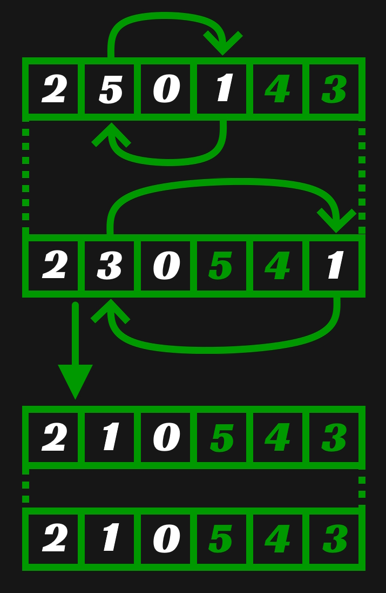
With the constraint fulfilled it is now possible to implement the Add function I described before explaining the changes that had to be made to existing functions. This function could not be implemented in constant time using a traditional sparse set because it would require looping through elements in the sparse array until a sparse element not in use is found. However, when they're initialized from the start, the implementation of this is trivial because the first unused element in the dense array already references the sparse element that is needed.
SparseId SparseSet::Add()
{
//...
return mDense[mDenseUsage++];
}
Just like the traditional implementation, my implementation also requires a means of checking the validity of provided arguments. Because of the constraint, one of the checks necessary for validity in the traditional implementation can be removed resulting in the following function.
bool SparseSet::Valid(SparseId id) const
{
return mSparse[id] < mDenseUsage;
}
The removed check is mDense[mSparse[id]] == id. This is removed because every dense element is bound to only one sparse element when using the constraint. There is no opportunity for a many to one relationship to form between sparse elements and a dense element, so if the index of dense element containing id is less than dense usage, nothing else needs to be checked.
As said early, code has been removed from all of these functions to focus purely on the sparse set and my modifications to it. My complete implementation can be found here if you'd like to see it.
The New Implementation
This sparse set data structure is great, but how exactly does it help solve the problems I highlighted earlier? That was not clear to me for longer than I would like to admit, but I was eventually able to put the pieces together. I'll describe the system here. To start, let's take a look at the members of Space after the refactor.
struct Space {
//...
Ds::SparseSet mMembers;
Ds::Map<Comp::TypeId, Table> mTables;
//...
};
There was a massive reduction in complexity and that is exhibited by the number of necessary members. The purpose of mTables remains the same as the old implementation. The purpose of mMembers is small, but very important. It is purely responsible for tracking which member IDs are in use. When a new member ID is needed, this sparse set supplies one with a guaranteed way to add and request unique member IDs. What's really interesting, and also the thing that took me the longest to learn, is the way these member IDs are used in tables.
struct Table {
//...
Comp::TypeId mTypeId;
Ds::SparseSet mMemberIdToIndexMap;
char* mData;
size_t mCapacity;
//...
}
The use of nearly everything here is the same as the old implementation except for the mMemberIdToIndexMap sparse set. Its use is thus; The sparse array is indexed by member IDs. A sparse element contains the index of the component owned by the member represented by that sparse element. The elements of the mData array, which contain component data, are 1 to 1 with the dense array of the sparse set. When two elements of the dense array undergo one of the aforementioned swaps, the mData array elements undergo the same swap. This guarantees that the elements from the start of the component data array have no gaps and that the memory is always reused when components are removed. With only that little trick, the perpetually growing memory overhead of the original implementation is eliminated.
Performance Comparisons
With a new implementation in place, it's nice to show the performance results such a refactor has. I further did my due diligence and wrote a series of performance tests that try to focus on core features of Space and simulate something akin to real world use cases. Here I'll explain what those tests are, the performance metrics gathered, and their implications.
Before jumping in, I'd like to note that gathering these numbers was not easy. Fortunately, the API shape of Space stayed mostly intact, but the minor changes made getting these tests working with the new and old implementations difficult. It required cherry-picking the performance tests on a commit containing the original implementation and making modifications such that the test is functional and simulates the same behavior. It also required improving the tests by inserting commits into the git history through rebasing. Since I was initially running these tests against the refactored code, it was also necessary to dramatically decrease some of the test constants to prevent the old implementation from crashing. In any case, getting these numbers required a good deal of effort and gitfu. It's satisfying to have further practiced the skills involved. Without further ado, the tests and collected numbers.
Test Descriptions
Create: Creates 1,000,000 members.
Add: Creates 500,000 members and adds the same set of 4 components to each.
AddWriteDelete: Creates 2,000 members, adds the same set of 4 components to each, writes values to each member's components, and then deletes all members. This process is repeated 300 times on the same instance of Space.
DistributedAddWriteRemoveAddDelete: Creates 2,000 members, each of which receive one of 4 components. These components are written to and removed from the members. Then different components are added to the existing members before the members are deleted. This process is repeated 300 times on the same instance of a Space.
RelationshipAddWriteDelete: Creates 10 members that receive 2 components, creates 10 children on each of those members that receive a different component, and then creates 20 children on each of the previously created children that receive a different unique component. All the components are written to before the root members are deleted. This process is repeated 500 times on the same Space instance.
Random: Performs 50,000 attempts to create a member with a random set of components. The probability that an entity is created is 1 at the start and decreases to 0 linearly until the last attempt. If the attempt fails, writes to the components of a random entity are performed. The test then performs 1 of 3 random operations 100,000 times: write to the components of a random entity, ensure that a random entity has a random component, or try to remove a random component from a random entity. After these random operations, the test makes 50,000 attempts to delete a random entity. The probability of deletion starts at 0 and increases to 1 linearly until the end of the attempts. All failed attempts result in writes to the components of a random entity. All of these steps are repeated 10 times.
These are contrived tests. They do not represent real use cases. That doesn't mean the performance changes demonstrated by these tests are meaningless, but that that their implications are limited to test behavior. There is without a doubt performance benefit for real applications.
Revision Descriptions
Every revision is a link to the commit containing that revision. All relevant files can be found in the src directory and are the following: world/Space.*, world/Table.*, ds/SparseSet.*, test/world/Space.cc, test/world/Table.cc, and test/perf/Space.cc. The performance tests are almost exactly the same in every revision, but old_0 required modifying RelationshipAddWriteDelete and Random slightly.
old_0: The original implementation as described at the start of this post.
new_0: The new implementation described in the previous section. The implementation of SparseSet uses 2 vectors to store the sparse and dense arrays.
new_1: The sparse set uses a single allocation to store the sparse and dense arrays.
The numbers in parentheses to the left of every value is the ratio of the value to the value from revision old_0.
* TestName ----------------------------------------------------------------*
| Revision | Time | Max Memory Usage | Allocations |
* Create ------------------------------------------------------------------*
| old_0 | 1.05 s | 135.0 MB | 1,000,018 |
| new_0 | (0.0319) 33.54 ms | (0.1296) 17.5 MB | (0.0000) 36 |
| new_1 | (0.0126) 13.21 ms | (0.1667) 22.5 MB | (0.0000) 18 |
* Add ---------------------------------------------------------------------*
| old_0 | 1.17 s | 145.0 MB | 500,176 |
| new_0 | (0.4137) 484.06 ms | (0.5621) 81.5 MB | (0.0005) 250 |
| new_1 | (0.2699) 315.83 ms | (0.5621) 81.5 MB | (0.0003) 161 |
* AddWriteDelete ----------------------------------------------------------*
| old_0 | 1.77 s | 100.19 MB | 600,177 |
| new_0 | (0.6441) 1.14 s | (0.0033) 330.84 KB | (0.0002) 138 |
| new_1 | (0.3679) 651.25 ms | (0.0033) 330.74 KB | (0.0001) 89 |
* DistributedAddWriteRemoveAddDelete --------------------------------------*
| old_0 | 1.72 s | 80.19 MB | 600,176 |
| new_0 | (0.6395) 1.10 s | (0.0029) 234.08 KB | (0.0002) 128 |
| new_1 | (0.3805) 654.50 ms | (0.0031) 244.62 KB | (0.0001) 82 |
* RelationshipAddWriteDelete ----------------------------------------------*
| old_0 | 1.84 s | 56.21 MB | 1,055,354 |
| new_0 | (0.8750) 1.61 s | (0.0062) 348.59 KB | (0.0996) 105,118 |
| new_1 | (0.5224) 961.27 ms | (0.0065) 364.52 KB | (0.0996) 105,074 |
* Random ------------------------------------------------------------------*
| old_0 | 1.13 s | 53.13 MB | 249,909 |
| new_0 | (0.7585) 857.11 ms | (0.0753) 4000.45 KB | (0.0008) 201 |
| new_1 | (0.5454) 616.26 ms | (0.0787) 4178.84 KB | (0.0005) 133 |
*--------------------------------------------------------------------------*
These times were collected with Tracy on a Ryzen 5 2600x. They were averaged over 50 tests. The max memory usages and allocation counts were always gathered from the first of the 50 tests. These values should be consistent for every run of a specific test.
These tests show massive improvements. The primary improvement I want to highlight is the memory usage. After all, the largest problem with my previous implementation was the poor use of memory. The most important tests to highlight this are those that create a large quantity of members, delete them, and then repeat the process. The refactor brought down the memory usage from 10s of MBs to 100s of KBs in these tests; For half of the tests, it's less than one percent of what it used to be. It's also worth noting there was a substantial decrease in memory usage for the Create and Add tests, but I don't find this as important since these tests do not utilize the Space's ability to recycle memory. I assume this decrease in memory occurred due to the removal of the mMembers vector.
Upon looking closely, one might notice that from the new_0 to the new_1 revision, there was actually a slight increase in max memory usage. This is due to the dense and sparse array being in a single allocation. When this allocation needs to become larger, a new allocation of twice the size is made for copying the existing sparse and dense arrays before deleting the old allocation. In the new_0 revision, this growth occurred in two separate allocations, one for the dense array and one for the sparse array, therefore resulting in a lower max memory usage.
It's also very pleasant to see the massive decrease in total allocation counts. Almost every test went down from 100,000s to 100s or even 10s of allocations. Create is particularly egregious with over 1,000,000 allocations using the old implementation, but a very satisfying reduction to 10s of allocations after the refactor. I can't imagine this being from anything except the name strings that were previously given to every member; this was made optional by placing names on a component during the refactor. RelationshipAddWriteDelete allocation counts were also on a smelly order of magnitude. Unfortunately, the refactor didn't freshen up RelationshipAddWriteDelete nearly as much. It specifically stress-tests relationship features and the refactor didn't focus on addressing problems with relationships besides storing them on components. Each relationship component has a vector of children that creates an allocation, hence it's not surprising to still see 100,000s of allocations here. On the bright side, a clear problem is ripe for a solution.
Upon first running my tests, I had very little idea what to expect from the run time of the refactored code. Fortunately, the run times of the tests take either half or less than half of the time using after the refactor. What really surprised me is the performance benefit gained when going from revision new_0 to new_1. As stated in the revision descriptions, the only difference here is that the sparse and dense arrays were combined into a single allocation rather than being stored in two vectors. The performance increase here could be due to an increase in cache hits or the bumming of extra operations performed by my vector implementation. Without digging deeper to analyze the exact differences, I can't be sure. The substantial increase in performance makes it worth either way.
To wrap this section up, I thought it would be nice to include pictures of the test results as presented within the Tracy client for each of the revisions.
old_0
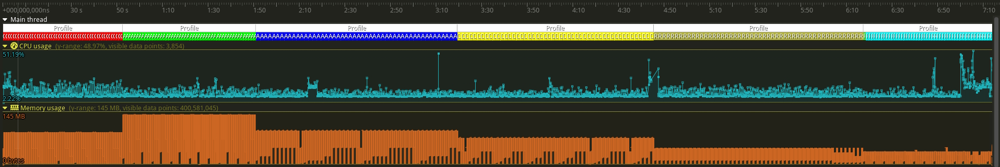
new_0
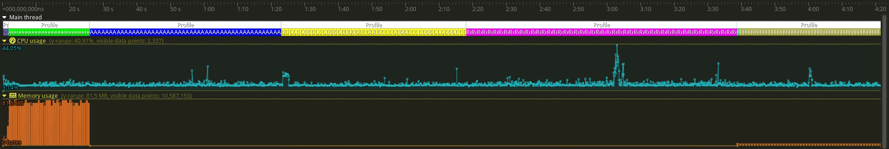
new_1
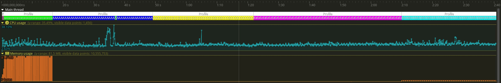
Conclusion and Review
The work done here was a success. There were performance benefits across the board. The timings are quite a bit faster and the memory usage and allocation counts are significantly lower. In addition to the improved performance properties, the complexity of the new implementation is dramatically reduced. I used to hate going through the unit tests for my old implementation of Space. I was printing the data driving the entire system to a golden file, and it was an absolute headache verifying the correctness of my unit tests by hand. So I improved those tests substantially by printing out the test Spaces to file using Valkor and the refactor makes the entire implementation much easier to understand. A reduction in mental gymnastics and vastly better performance? It's a pleasure to receive the best of both worlds.
There is a very important lesson to learn here. Before writing my initial implementation those years ago, I could have done significantly more research beforehand. The patterns used in the refactor are not new. They are quite well known and they were known back when I wrote my first implementation. Instead of being stubborn and believing I can figure out everything on my own, researching more about ECSs would have set me on a better path earlier. That isn't to say not doing so was entirely a loss. I wouldn't have this post without the detour, but now the importance of researching the current state of the art is ingrained in me, a lesson that I will find very beneficial in the future as I approach writing other systems necessary for my project.
Regarding the performance tests, I didn't absolutely guarantee that they have consistent behavior across the different revisions. This is mostly a problem for the random test due to its contrived inconsistent nature. Though I did take many measures to ensure that the represented Space would be consistent across implementations, without a more rigorous method for guaranteeing consistency, I unfortunately can't be 100% certain that they are the same even though I believe they are. At a certain point I had to decide how deep I want to go with the review of my refactor and I may have gone too far as it is.
Another topic I keep coming back to while reviewing this work is the impact of the changes I made to the existing sparse set structure. What kind of performance impact does holding my constraint concur? These operations are very much on the hot path and having just one more assignment will affect performance, but I can't know how drastic that effect is without bumming instructions and running performance tests again. The most important thing to recognize is that there are clear potential performance improvements that can be explored: removing correct usage verification in release builds, removing dynamic resizing, and using the already established sparse set implementation by separating the structure I have created into its own construct.
I didn't touch on in this entire post, but it's important to say nonetheless; I didn't need to do this refactor yet. When I wrote my initial implementation, I needed entities and components, so I built a crude system to do just that. I have legitimately been using the old smelly implementation since I wrote it and I've never had a situation where it wasn't able to suffice my needs. That's great evidence that the capabilities of a system can be far from perfect and still be useful. They just need to be able to solve the current problem on the table. In the same sense, the system after this refactor is vastly better, but there might come a day when I need it to be better. I suppose what I want to establish by entertaining this is that chasing perfection is a way to get held up on things that aren't important yet. I'm of the opinion that one should face problems once doing so brings substantial or necessary benefit.
Oh, and one last small thing, because I don't want to have not said it. Member needs to be renamed to Entity. For the sake of readability and conformity with the current language used to describe these systems, this rename is only a benefit.
If you find errors in this post or want to make recommendations on how things here can be improved, don't hesitate to make an issue. At the moment, I am really interested in finding a more streamlined way to create images like the ones in this post. I used paint.net to create all the images here and I couldn't help but thinking that there must be a better way. My thought at the moment is to explore using LaTeX to do so, but other recommendations are absolutely welcome.
If you've read this entire post. Wow. I sincerely thank you for reading about my tumultuous journey. I do it because of a passion for the work, a game I really want to play, and as a means of filling out my portfolio for whatever jobs I will be applying for in the future. It means a lot if just a few people read it. I don't know when my next post will be, aber bis dann! o/